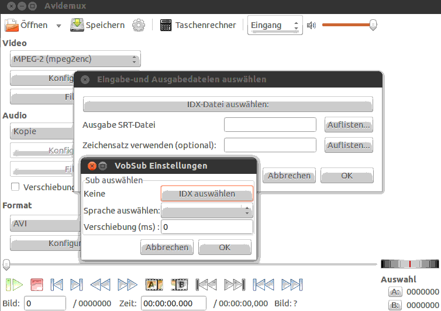
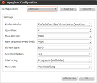

Avidemux
Dieser Artikel wurde für die folgenden Ubuntu-Versionen getestet:
Ubuntu 16.04 Xenial Xerus
Ubuntu 14.04 Trusty Tahr
Zum Verständnis dieses Artikels sind folgende Seiten hilfreich:
Avidemux  ist ein Programm zur Bearbeitung von Videodateien, ähnlich VirtualDub unter Windows. Hauptsächlich ist das Programm zum Schneiden von Videos gedacht; bedingt kann man es aber auch zum Konvertieren in andere Formate benutzen. Über zahlreiche Filter lassen sich umfangreiche Manipulationen vornehmen. Der Funktionsumfang von Avidemux umfasst folgende Punkte:
ist ein Programm zur Bearbeitung von Videodateien, ähnlich VirtualDub unter Windows. Hauptsächlich ist das Programm zum Schneiden von Videos gedacht; bedingt kann man es aber auch zum Konvertieren in andere Formate benutzen. Über zahlreiche Filter lassen sich umfangreiche Manipulationen vornehmen. Der Funktionsumfang von Avidemux umfasst folgende Punkte:
Schneiden von Videodateien (framegenau, zu Artefakten siehe Problembehebung)
Konvertieren von Video- und Audiospur in andere Formate
Anzeige von Informationen zu den verwendeten Codecs
Zusammenfügen von Videos mit gleichem Format
Audiospuren aus einer Videodatei extrahieren
Untertitel aus einer Videodatei extrahieren
Manipulationen durch den Einsatz zahlreicher Filter
Neu ab Version 2.5.3 ist der Menüpunkt "Auto", mit welchem u.a. passende Dateien für Super Video CD, Video CD und DVD erzeugt werden können.
Installation¶
Avidemux ist bis einschließlich Ubuntu 15.10 in den offiziellen Paketquellen enthalten. Je nach Desktop-Umgebung wird entweder das Paket in der GTK Version
avidemux (multiverse - für Unity, GNOME 3, MATE, LXDE, Xfce)
 mit apturl
mit apturl
Paketliste zum Kopieren:
sudo apt-get install avidemux
sudo aptitude install avidemux
oder das Paket in Qt Version
avidemux-qt (multiverse - für KDE)
mit apturl
Paketliste zum Kopieren:
sudo apt-get install avidemux-qt
sudo aptitude install avidemux-qt
installiert[1]. Die Installation der Kommandozeilenversion ist optional:
avidemux-cli (multiverse)
mit apturl
Paketliste zum Kopieren:
sudo apt-get install avidemux-cli
sudo aptitude install avidemux-cli
Fremdquellen¶
Die aktuelle Version kann via GetDeb (avidemux2.6-qt) oder über ein PPA installiert werden, es wird auch Ubuntu ab Ubuntu 16.04 unterstützt.
Adresszeile zum Hinzufügen des PPAs:
ppa:rebuntu16/avidemux+unofficial
Hinweis!
Zusätzliche Fremdquellen können das System gefährden.
Ein PPA unterstützt nicht zwangsläufig alle Ubuntu-Versionen. Weitere Informationen sind der  PPA-Beschreibung des Eigentümers/Teams rebuntu16 zu entnehmen.
PPA-Beschreibung des Eigentümers/Teams rebuntu16 zu entnehmen.
Damit Pakete aus dem PPA genutzt werden können, müssen die Paketquellen neu eingelesen werden.
Das Avidemux Paket ist als Qt4 oder Qt5 Version verfügbar, standardmässig wird die Qt4 Version angeboten, beide Qt Versionen sind lauffähig.
Nach dem Aktualisieren der Paketquellen können folgende Pakete installiert werden:
avidemux2.6-qt4 (ppa, Qt4 Version)
mit apturl
Paketliste zum Kopieren:
sudo apt-get install avidemux2.6-qt4
sudo aptitude install avidemux2.6-qt4
oder
avidemux2.6-qt5 (ppa, Qt5 Version)
mit apturl
Paketliste zum Kopieren:
sudo apt-get install avidemux2.6-qt5
sudo aptitude install avidemux2.6-qt5
Benutzung¶
Hinweis:
Um alle gewünschten Formate bearbeiten zu können, müssen natürlich auch die entsprechenden Codecs installiert sein [3]. Dateien im Microsoft-Format WMV lassen sich mit Avidemux ab Version 2.3.0 bearbeiten. Siehe auch: Avidemux-Wiki: Mythen & Märchen
Bei der Installation wird bei Ubuntu-Varianten mit einem Anwendungsmenü ein Programmstarter unter "Unterhaltungsmedien -> Avidemux" bzw. "Multimedia -> Avidemux" angelegt [2]. Die Verwendung von Avidemux2 ist relativ einfach und intuitiv. Deshalb nur einige wichtige Tipps:
Möchte man eine .mpg-Datei öffnen, muss diese vom Programm indiziert werden, damit man schnell zwischen den I-Frames hin- und herspringen kann. Ab Version 2.3.0 wird beim Öffnen einer solchen Datei automatisch danach gefragt, ob man dies machen möchte.
I-Frames sind die Start-Frames. Ausgehend von diesen Frames wird dann komprimiert. Es ist also nicht möglich, eine .mpg-Datei zu recodieren, in der das allererste Frame kein I-Frame ist.
Die Frame-Art ist unten in der Symbolleiste zu sehen
Am einfachsten kann man sich mithilfe der Pfeiltasten im Film bewegen. ← und → springt dabei zwischen Einzelframes hin und her, wohingegen ↑ und ↓ sich zwischen den einzelnen I-Frames bewegt.
Will man eine Datei rekodieren, müssen Audio- und Video-Format eingestellt werden (ansonsten auf Copy belassen)
Eine .mpg-Datei im DVD-Format erhält man mit dem Format: "MPEG PS A+V"
Definierten Bereich kopieren/umwandeln¶
Ausgewählte Bereiche werden mit Alt Gr + 8 (Startframe) und Alt Gr + 9 (Endframe) gesetzt.
Werbung ausschneiden¶
Will man eine Auswahl entfernen, betätigt man Entf . Dabei wird die gesamte Auswahl inklusive Startframe A herausgeschnitten. Nur das letzte Frame - Endframe B - bleibt erhalten.
Synchronisation von Bild und Ton¶
Falls Bild/Ton asynchron sind, vor dem Umwandeln "Audio -> Haupt-Audiospur" anwählen und den Shiftwert (z.B. ...s/579s) merken. Diesen in "Audio -> Filter" unter "Verschiebung" wie folgt eintragen: "-579". Ton und Bild sind nun wieder synchron. Falls der Shiftwert auf 0 steht, aber Ton und Bild trotzdem versetzt sind, muss man mit "Verschiebung", sogenanntem Timeshift, experimentieren. Als Startwert eignet sich "-579". Dieser Wert kann während des Abspielens verändert werden, bis das Ergebnis zufriedenstellend ist. Ein negativer Wert eignet sich dafür, wenn der Ton später als das passende Bild kommt. Entsprechend sollte man einen positiven Wert einstellen, falls der Ton zu früh abgespielt wird.
Ab Ubuntu 14.04 gibt es ein reproduzierbares Problem mit der Synchronisation von Bild und Ton: Ist der Startframe A nicht am Anfang, wird zwar das Video geschnitten, der Ton beginnt jedoch immer am Anfang bei Bild 0, auch wenn der Startframe A z.B bei Bild 12415 liegt. Siehe auch das Thema im Forum und den Fehlerbericht .
Aspect Ratio / Seitenverhältnis¶
Avidemux ist in manchen Versionen sehr eigen mit dem Seitenverhältnis. Damit man bei AVI-Dateien das originale Seitenverhältnis einstellen kann, wie z.B. 4:3 oder 16:9, muss man sich eines kleinen Tricks behelfen:
man öffnet das Menü "Video -> Filter"
wähle die Kategorie "Transformieren"
füge den Filter "MPlayer Größe ändern" hinzu
als Quelle z.B. 16:9 auswählen
als Ziel bei AVI-Dateien 1:1 auswählen
"16 aufrunden" anklicken
Man merke sich die Auflösung der Breite und schiebe dann den Schieberegler leicht hin und her, damit die originale Breite wieder eingestellt ist. Die Höhe hat sich jetzt verändert, und der Film wird später im Breitformat wie gewünscht angezeigt.
Presets/Vorlagen definieren¶
Wenn man immer wieder die gleichen Einstellungen benützt, um aufgenommene Filme umzuwandeln, dann kann man diese als sogenannte Presets oder auch Vorlagen definieren, speichern und auf Bedarf abrufen. Dazu geht man zum Beispiel wie folgt vor:
Avidemux starten
Film laden
Video - "MPEG-4 ASP (Xvid4)" einstellen
"Video -> Konfigurieren -> Kodier-Modus -> Zweifach-Durchlauf - Durchschnittsbitrate = 1300"
"Video -> Filter -> Transformieren -> MPlayer Größe ändern" auswählen
"Quelle 16:9" auswählen
"16 aufrunden" anklicken
"Lanczos3" auswählen
Schieberegler kurz hin und herbewegen, damit die Einstellungen auch übernommen werden (wie im Abschnitt Aspect Ratio beschrieben)
"Audio - MP3 (LAME)" auswählen
"Audio - Konfigurieren - Bitrate(kb/s) = 160"
Diese Einstellungen sollen jetzt gespeichert werden. Dazu wählt man aus dem Menü "Datei" den Punkt "Projekt speichern als ..." und gibt einen entsprechenden Namen an z.B. "Xvid-16-9-1300-mp3-160.js". Der Inhalt der Datei sieht dann folgendermaßen aus:
//AD <- Needed to identify//
//--automatically built--
//--Project: /home/user/Videos/Xvid-16-9-1300-mp3-160.js
var app = new Avidemux();
//** Video **
// 01 videos source
app.load("/home/user/Videos/Mein aufgenommener Film.ts.idx");
//01 segments
app.clearSegments();
app.addSegment(0,0,90200);
app.markerA=0;
app.markerB=90199;
app.rebuildIndex();
//** Postproc **
app.video.setPostProc(3,3,0);
app.video.setFps1000(25000);
//** Filters **
app.video.addFilter("mpresize","w=720","h=400","algo=2");
//** Video Codec conf **
app.video.codec("XVID4","CQ=4","500 06 00 00 00 01 00 00 00 fa 00 00 00 02 00 00 00 00 00 00 00 00 00 00 00 01 00 00 00 00 00 00 00 00 00 00 00 00 00 00 00 00 00 00 00 00 00 00 00 01 00 00 00 01 00 00 00 00 00 00 00 02 00 00 00 02 00 00 00 02 00 00 00 1f 00 00 00 1f 00 00 00 1f 00 00 00 00 00 00 00 01 00 00 00 01 00 00 00 00 00 00 00 00 00 00 00 00 00 00 00 05 00 00 00 05 00 00 00 05 00 00 00 00 00 00 00 00 00 00 00 00 00 00 00 96 00 00 00 64 00 00 00 01 00 00 00 01 00 00 00 00 00 00 00 00 00 00 00 01 00 00 00 00 00 00 00 00 00 00 00 00 00 00 00 00 00 00 00 00 00 00 00 00 00 00 00 00 00 00 00 00 00 00 00 00 00 00 00 00 00 00 00 00 00 00 00 00 00 00 00 00 00 00 00 00 00 00 00 00 00 00 00 00 00 00 00 00 00 00 00 00 00 00 00 00 00 00 00 00 00 00 00 00 00 00 00 00 00 00 00 00 00 00 00 00 00 00 00 00 00 00 00 00 00 00 00 00 00 00 00 00 00 00 00 00 00 00 00 00 00 00 00 00 00 00 00 00 00 00 00 00 00 00 00 00 00 00 00 00 00 00 00 00 00 00 00 00 00 00 00 00 00 00 00 00 00 00 00 00 00 00 00 00 00 00 00 00 00 00 00 00 00 00 00 00 00 00 00 00 00 00 00 00 00 00 00 00 00 00 00 00 00 00 00 00 00 00 00 00 00 00 00 00 00 00 00 00 00 00 00 00 00 00 00 00 00 00 00 00 00 00 00 00 00 00 00 00 00 00 00 00 00 00 00 00 00 00 00 00 00 00 00 00 00 00 00 00 00 00 00 00 00 00 00 00 00 00 00 00 00 00 00 00 00 00 00 00 00 00 00 00 00 00 00 00 00 00 00 00 00 00 00 00 00 00 00 00 00 00 00 00 00 00 00 00 00 00 00 00 00 00 00 00 00 00 00 00 00 00 00 00 00 00 00 00 00 00 00 00 00 00 00 00 00 00 00 00 00 00 00 00 00 00 00 00 00 00 00 00 00 00 00 ");
//** Audio **
app.audio.reset();
app.audio.codec("lame",160,16,"00 00 00 00 01 00 00 00 02 00 00 00 00 00 00 00 ");
app.audio.normalizeMode=0;
app.audio.normalizeValue=0;
app.audio.delay=0;
app.audio.mixer("NONE");
app.setContainer("AVI");
setSuccess(1);
//app.Exit();
//End of script
Die Datei nun öffnen und editieren, denn es sind noch überflüssige Informationen, wie z.B. der Dateiname u.a., enthalten. Es sollen aber nur die Codec- und Filtereinstellungen erhalten bleiben. Nachdem man alle Datei-bezogenen Informationen gelöscht hat, sieht die Datei folgendermaßen aus:
//AD <- Needed to identify//
//--automatically built--
//--Project: /home/user/Videos/Xvid-16-9-1300-mp3-160.js
var app = new Avidemux();
//** Postproc **
app.video.setPostProc(3,3,0);
app.video.setFps1000(25000);
//** Filters **
app.video.addFilter("mpresize","w=720","h=400","algo=2");
//** Video Codec conf **
app.video.codec("XVID4","CQ=4","500 06 00 00 00 01 00 00 00 fa 00 00 00 02 00 00 00 00 00 00 00 00 00 00 00 01 00 00 00 00 00 00 00 00 00 00 00 00 00 00 00 00 00 00 00 00 00 00 00 01 00 00 00 01 00 00 00 00 00 00 00 02 00 00 00 02 00 00 00 02 00 00 00 1f 00 00 00 1f 00 00 00 1f 00 00 00 00 00 00 00 01 00 00 00 01 00 00 00 00 00 00 00 00 00 00 00 00 00 00 00 05 00 00 00 05 00 00 00 05 00 00 00 00 00 00 00 00 00 00 00 00 00 00 00 96 00 00 00 64 00 00 00 01 00 00 00 01 00 00 00 00 00 00 00 00 00 00 00 01 00 00 00 00 00 00 00 00 00 00 00 00 00 00 00 00 00 00 00 00 00 00 00 00 00 00 00 00 00 00 00 00 00 00 00 00 00 00 00 00 00 00 00 00 00 00 00 00 00 00 00 00 00 00 00 00 00 00 00 00 00 00 00 00 00 00 00 00 00 00 00 00 00 00 00 00 00 00 00 00 00 00 00 00 00 00 00 00 00 00 00 00 00 00 00 00 00 00 00 00 00 00 00 00 00 00 00 00 00 00 00 00 00 00 00 00 00 00 00 00 00 00 00 00 00 00 00 00 00 00 00 00 00 00 00 00 00 00 00 00 00 00 00 00 00 00 00 00 00 00 00 00 00 00 00 00 00 00 00 00 00 00 00 00 00 00 00 00 00 00 00 00 00 00 00 00 00 00 00 00 00 00 00 00 00 00 00 00 00 00 00 00 00 00 00 00 00 00 00 00 00 00 00 00 00 00 00 00 00 00 00 00 00 00 00 00 00 00 00 00 00 00 00 00 00 00 00 00 00 00 00 00 00 00 00 00 00 00 00 00 00 00 00 00 00 00 00 00 00 00 00 00 00 00 00 00 00 00 00 00 00 00 00 00 00 00 00 00 00 00 00 00 00 00 00 00 00 00 00 00 00 00 00 00 00 00 00 00 00 00 00 00 00 00 00 00 00 00 00 00 00 00 00 00 00 00 00 00 00 00 00 00 00 00 00 00 00 00 00 00 00 00 00 00 00 00 00 00 00 00 00 00 00 00 00 00 00 00 00 00 00 00 00 ");
//** Audio **
app.audio.reset();
app.audio.codec("lame",160,16,"00 00 00 00 01 00 00 00 02 00 00 00 00 00 00 00 ");
app.audio.normalizeMode=0;
app.audio.normalizeValue=0;
app.audio.delay=0;
app.audio.mixer("NONE");
app.setContainer("AVI");
setSuccess(1);
//app.Exit();
//End of script
Die Änderungen und die Datei in das Verzeichnis /home/username/.avidemux/custom abspeichern. Beim nächsten Start von Avidemux lädt man einen Film und kann dann über das Menü "Individuell" das Skript auswählen und setzt damit alle benötigten Einstellungen (Codecs und Filter) auf einmal.
avidemux 2.6¶
Ab Version 2.6 kann so ein Projekt auf drei verschiedene Arten gespeichert werden:
SpiderMonkey Projekt mit der Endung js
Tinypy Projekt mit der Endung py
QtScript Projekt mit der Endung admjs
Wie oben beschrieben können diese Projekte zu einer allgemein gültigen Vorlage umeditiert und in ~./avidemux6/custom/ bereitgestellt werden.
Konvertieren einer Vob-Sub Untertitelspur in das Textformat SRT¶
Direkt nach dem Umwandeln einer DVD in Dateien ("rippen") liegt eine Untertitelspur üblicherweise im Vob-Sub Format vor (zwei Dateien, eine *.sub und eine *.idx). Dort sind alle Untertitel als Bilder gespeichert. Der Vorteil, diese zuerst in ein Textformat umzuwandeln, ist erstens, dass die Untertitelspur schöner, mit besserer Kantenglättung und in beliebiger Schrift angezeigt wird, und zweitens, dass eine solche Textdatei oftmals auf etwa ein Vierzigstel der Größe schrumpft.
Für die Umwandlung muss die Software mit OCR den Text in den Bildern dekodieren und in eine Text-Datei schreiben. Avidemux ist hierfür geeignet. Hierfür erstellt man dynamisch eine Zuordnungsdatei zwischen gelesenen Zeichen und ASCII Code. Diese Glyph-Zeichensatz-Dateien kann man anschließend speichern und wiederverwenden.
Hinweis:
Es wäre empfehlenswert, Avidemux-Glyph-Zeichensatz-Dateien hier hochzuladen und auszutauschen.
Wichtig ist, dass die herausgemuxte Vob-Sub Informationen über die Spur enthält. Die notwendigen sind hier aufgelistet: DVDs manuell rippen
Man startet Avidemux und wechselt in folgenden Dialog: "Werkzeuge -> OCR (VobSub -> SRT)"
Nun wählt man die IDX-Datei aus, wählt eine Ausgabedatei, und falls vorhanden, eine Glyph-Zeichensatz-Datei. Hat man keine Glyph-Zeichensatz-Datei, wird die Software nun nach der korrekten Zuordnung von gescannten Zeichen zu ACSII-Code fragen. Manchmal müssen auch Buchstabenkombinationen, die sehr eng zusammenstehen wie z.B. rn oder ttf als solche eingegeben werden. Je mehr man das Programm somit trainiert, desto schneller wird es.

Nach der Überarbeitung ist die SRT-Datei fertig, und man wird aufgefordert, seine Glyph-Zeichensatz-Datei für spätere Verwendung zu speichern. Die SRT-Datei lässt sich nun ohne Schwierigkeiten in einem Schritt, z.B. mit Gnome Subtitle, in ein progressiveres Format wie ASS umwandeln.
Beispiele¶
DVB-T Aufnahmen schnell umwandeln¶
die Videodatei ("Transport Stream"), z.B. FILM.ts, öffnen und indizieren lassen
Audio und Video auf "Copy" belassen, Ausgabeformat "MPEG PS A+V", Dateiendung ".mpg"
zur Synchronisation von Bild und Ton ist hier ProjectX besser geeignet, da es die Synchronisation von DVB-T-Streams automatisieren kann
Encodieren¶
die Videodatei, z.B. FILM.m2v, öffnen und indizieren lassen
die Audiodatei, z.B. FILM.mp2, unter Audio-Main Track öffnen, nachdem man MP2/3 ausgewählt hat
in der linken Spalte auswählen, was encodiert werden soll, z.B. XviD4 + OGG Vorbis im OGM-Container
auf Speichern klicken und z.B. als FILM.ogm speichern
Schritt eins durchlaufen lassen
Schritt 2 durchlaufen lassen, dieser baut dann auch die Ogg-Vorbis-Spur ein
Zweite Tonspur bei avi-Dateien hinzufügen¶
Die Video Datei, z.B. FILM.avi, öffnen, VBR-Zeitkarte erstellen und indizieren lassen
Unter "Audio" den Reiter "Zweite Tonspur" öffnen und die Audioquelle wählen, z.B. "Externes AC3", die Tonspur, z.B. FILM.ac3 auswählen und mit "OK" bestätigen
In der linken Spalte unter "Format", das Format ändern von "AVI" in "AVI, 2x Audio"
Anschließend auf "Speichern" klicken und die Datei abspeichern, z.B. als FILM2.avi
Hinweis:
Die zweite Audiospur kann niemals eine MP3 mit variabler Bitrate sein. Zum Konvertieren der VBR-MP3 in ein MP3 mit konstanter Bitrate (CBR) kann man beispielsweise LAME verwenden.
Videofilter¶
Es gibt u.a. Filter zum Beschneiden, zum Ändern der Größe, Schwärzen der Ränder, Vergrößern mit Schwarzrand, Entfernen von Senderlogos, zum Drehen und Spiegeln, zum Rückwärtslaufenlassen sowie zum Ein- und Ausblenden.
DVD-Video konforme Einstellungen¶

Video auf "DVD (lavc)" einstellen, bei "Konfigurieren" können die Standardwerte verwendet werden mit Ausnahme des Seitenverhältnisses. Der Kodier-Modus kann ebenfalls nach eigenen Wünschen angepasst werden (Beispiel siehe Bildschirmfoto)
Wenn die Auflösung der Quelldatei nicht 720x576 ist, muss man auf diese mit Hilfe von Filtern kommen. Hier bieten sich Transformations-Filter an (z.B. "MPlayer Größe ändern" oder "Schwarze Ränder addieren")
Audio auf "MP2 (TwoLAME)" einstellen. Da eine Neukodierung einer bereits verlustbehaftet komprimierten Quelle einen weiteren Qualitätsverlust nach sich zieht, sollte unter "Konfigurieren" keine zu geringe Bitrate gewählt werden (je nach Eingabeformat wäre 160 oder 192 Kbit/s angemessen). Falls die Quelldatei bereits einen MP2- oder AC3-Strom beinhaltet, sollte Audio auf "Kopie" eingestellt werden.
Format auf "MPEG-PS (A+V)" einstellen
Auf Speichern klicken und z.B. als FILM.mpg speichern
Problembehebung¶
Inkompatible Einstellungen¶
Nicht alle Kodiereinstellungen sind möglich. Nachstehende sollte zumindest funktionieren:
Format: AVI
Video: MPEG-4 ASP (Xvid)
Audio: MP3 (lame)
Trouble initializing audio device¶
Wenn unter "Bearbeiten -> Einstellungen -> Reiter: Audio -> Audio-Ausgabe:" "ALSA" ausgewählt ist, in "ALSA device:" anstelle des Standardwertes "plughw:0,0" den Wert "default" eintragen.
Video ist zu groß, Ansicht springt¶
Wenn das eingeladene Video größer als die Anzeigefläche des Programms ist, wird ein Bearbeiten dadurch erschwert, dass die Bildansicht "springt" und die Menüleiste nicht mehr erreichbar ist. In diesem Falle kann man mit Alt + S dennoch das Menü "Ansicht" erreichen und den Zoomwert entsprechend ändern. Danach sollten keine Probleme mehr auftreten.
Artefakte nach Schnitt¶
Nach dem framegenauen Schneiden einiger "High Qualitiy Codecs" (z.B. H.264) kann es zu Artefakten, also Bildstörungen kommen, da Avidemux bis Version 2.5.4 keinen neuen "Keyframe" erstellt. Der Keyframe ist ein vollständiges Bild, die nachfolgenden Frames enthalten nur noch Veränderungensinformationen. Schneidet man einen Keyframe weg, beziehen sich die Änderungsinformationen der nachfolgenden Frames auf den falschen Keyframe, und es kommt zu Artefakten. Abhilfe schafft die Installation der Version 2.5.6 oder neuer, die jedoch nur aus Fremdquellen erhältlich ist.
Fehlermeldung "Keinen Audio-Dekodierer für diese Datei gefunden"¶
Zur Abhilfe über die Paketverwaltung folgendes Paket nachinstallieren:
avidemux-plugins-common (multiverse)
mit apturl
Paketliste zum Kopieren:
sudo apt-get install avidemux-plugins-common
sudo aptitude install avidemux-plugins-common
Fehlermeldung "Tonverschiebung beim Videoschnitt fehlerhaft"¶
Schneidet man einen Ausschnitt aus, z.B aus einem DVB-T-Mitschnitt im .m2t-Format, beginnt unter Ubuntu 14.04 in der 64-bit-Version der Ton immer am Anfang des ursprünglichen Videos.
Videos anhängen¶
In der Version für Xenial aus dem PPA funktioniert ein Anhängen weiterer Videodateien, allerdings wird das nicht ersichtlich.
AppImage¶
Falls die beschriebenen Installationswege nicht funktionieren, kann von Avidemux.org ein appImage installiert werden: Datei herunterladen, ausführbar machen und starten.
Links¶
Wiki
- Versionsübersicht und andere Informationen
DVB MPEG-TS nach AVI konvertieren (Teil 2)
 - Blogbeitrag, 05/2009
- Blogbeitrag, 05/2009Videos schneiden und komprimieren mit Avidemux
- LinuxUser, 11/2005Erstellen von DVD-Video-Disks
- Pro-Linux, 04/2005Videobearbeitung
 Übersichtsartikel
Übersichtsartikel
- Erstellt mit Inyoka
-
 2004 – 2017 ubuntuusers.de • Einige Rechte vorbehalten
2004 – 2017 ubuntuusers.de • Einige Rechte vorbehalten
Lizenz • Kontakt • Datenschutz • Impressum • Serverstatus -
Serverhousing gespendet von